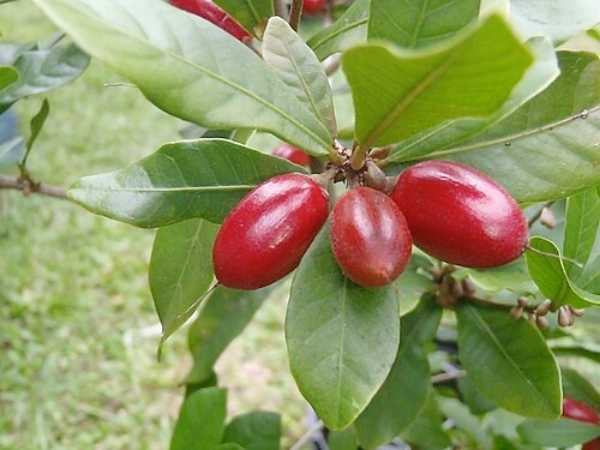

Synsepalum dulcificum
Common Names: Miracle Fruit, Miracle Berry, Sweet Berry
Local Name: Agbayun (Yoruba, West Africa)
Family: Sapotaceae
Origin: Tropical West Africa (Ghana, Nigeria, Cameroon)
Plant Type: Perennial evergreen shrub
Variety: Single species; selected cultivars for larger fruit
Average Lifespan: 20–30 years
| Growth Habit | Slow-growing dense evergreen shrub to small tree |
| Plant Size | 1.5–5 meters tall; compact bushy form |
| Leaves | Alternate, simple, obovate, 5–10 cm long, glossy dark green, clustered at branch tips |
| Flowers | Tiny, white, 5-lobed, borne in leaf axils; appear year-round |
| Flower Characteristics | Inconspicuous; self-fertile; bloom continuously in warm conditions |
| Fruit | Small oval berry, 2–3 cm long, thin skin with mild sweet pulp containing miraculin protein |
| Fruit Color | Bright red when ripe |
| Seed Characteristics | Single large seed per fruit; olive-shaped; loses viability quickly |
| Root System | Shallow fibrous root system; sensitive to root disturbance |
| Climate | Tropical; needs warm humid conditions year-round; frost-intolerant |
| Temperature Range | 20–35°C ideal; damaged below 10°C |
| Rainfall Requirement | 1500–2500 mm annually; consistent humidity |
| Soil Type | Acidic, well-drained, humus-rich soil; no lime or alkaline soils |
| Soil pH Preference | 4.5–5.8 (strongly acidic) |
| Sun Requirement | Partial shade to filtered light; avoid harsh direct afternoon sun |
| Spacing | 2–3 meters between plants |
| Irrigation Method | Drip irrigation with rainwater or distilled water (sensitive to alkaline water) |
| Water Requirement | Moderate; consistent moisture but never waterlogged |
| Can it Grow in Pots? | Yes — excellent container plant; use acidic potting mix (peat/pine bark) |
| Fertilizer Schedule | Monthly during growing season with acidic fertilizer |
| Recommended Organic Fertilizers | Acidic compost, coffee grounds, pine bark, azalea/camellia fertilizer |
| Pesticide Frequency | Rarely needed; generally pest-free |
| Recommended Organic Pesticides | Neem oil for mealybugs or scale if needed |
| Mulching Practice | Acidic mulch (pine needles, pine bark) essential |
| Training System | Natural bushy form; minimal training needed |
| Pruning Time | Light pruning any time to maintain shape |
| How to Prune | Minimal; tip-prune to encourage bushiness |
| Common Pests | Mealybugs, spider mites (indoor/greenhouse) |
| Common Diseases | Root rot from alkaline soil or overwatering; chlorosis from high pH |
| Disease Prevention & Remedies | Maintain acidic soil pH; use rainwater; avoid lime; good drainage |
| Flowering Months | Year-round in tropics; 2–3 flushes per year |
| Fruiting Season | Year-round; fruits ripen 2–3 months after flowering |
| Days to Harvest | 60–90 days from flowering |
| Harvest Indicators | Berry turns bright red, slightly soft; pick when fully coloured |
| Average Yield per Plant | 1–3 kg per plant per year (small berries) |
| Pollination Type | Self-pollination; insect-assisted |
| Pollination Notes | Self-fertile; hand pollination can improve fruit set indoors |
| Pollination Details | Self-fertile; small insects pollinate in nature; hand-pollinate indoors |
| Propagation by Seeds | Fresh seeds germinate in 2–4 weeks; must be sown immediately; seedlings fruit in 3–5 years |
| Propagation by Cuttings | Semi-hardwood cuttings with rooting hormone; slow but possible |
| Propagation by Grafting | Not commonly grafted; seed propagation is standard |
| Water Usage | Low to moderate; small plant with modest water needs |
| Soil Conservation Practices | Understorey plant; grows well under forest canopy |
| Organic Practices Used | Minimal inputs; naturally pest-resistant |
| Companion Plants | Other acid-loving plants; grows under taller tropical trees |
| Biodiversity Benefits | Native West African forest understorey species; fruit eaten by birds |
| Commercial Production Regions | Ghana, Nigeria; cultivated in Florida, Taiwan, Japan, Australia |
| Market Uses | Fresh berries, freeze-dried tablets, flavour-tripping events |
| Processing Uses | Freeze-dried miracle berry tablets, miraculin extract for food industry research |
| Market Value (Approx.) | $1–3 per berry; freeze-dried tablets $15–30 per pack; high-value niche product |
| Symbolism | Symbol of nature's wonders; popular in food science and culinary innovation |
| Traditional Uses | West African communities eat berries before sour foods and palm wine to enhance sweetness; used for centuries |
| Calories | Low (small berry consumed in tiny quantities) |
| Dietary Fiber | Present in small amounts |
| Vitamin C | Moderate amounts |
| Vitamin A | Trace amounts |
| Iron | Trace amounts |
| Potassium | Present |
| Antioxidants | Contains polyphenols and the unique glycoprotein miraculin |
| Other Key Nutrients | Miraculin — a taste-modifying glycoprotein that binds to taste receptors |
| Anxiety & Sleep | Not documented |
| Immune Support | Antioxidant content supports general health |
| Anti-inflammatory Properties | Polyphenols provide mild anti-inflammatory benefits |
| Heart Health | Potential to reduce sugar intake by making sour foods taste sweet |
| Digestive Health | Being studied to help chemotherapy patients with taste distortion enjoy food |
Disclaimer: Information provided is for educational purposes only and not a substitute for medical advice.
Add your field observations here.